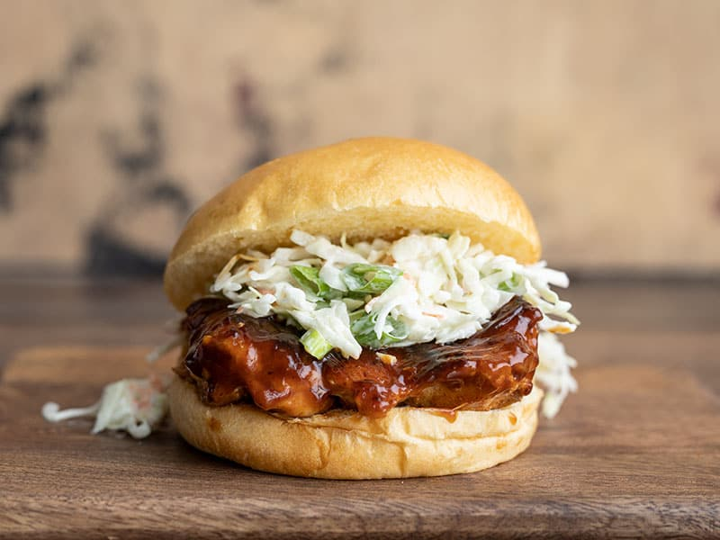

Easy BBQ Chicken Sandwiches

Image and recipe from BudgetBytes.
Description
Craving BBQ, but don’t have a pit? These Easy BBQ Chicken Sandwiches only take about 30 minutes to make and cost only a couple of bucks a piece, making them a really fast, inexpensive, and tasty way to kill that BBQ craving.
I’m a big fan of sweet potatoes with BBQ, so I love Spicy Sweet Potato Fries as a side for these BBQ Chicken Sandwiches. Thick cut Steak Fries (and maybe some Comeback Sauce) would also be awesome on the side.
Ingredients
- 1 tsp smoked paprika
- 1/2 tsp garlic powder
- 1/4 tsp salt
- 1/4 tsp pepper
- 1 lb. boneless, skinless chicken thighs
- 1 Tbsp cooking oil
- 1/4 cup BBQ sauce
- 7 oz. coleslaw mix
- 2 green onions, sliced
- 1/4 cup ranch dressing
- 4 buns
Steps
- Combine the smoked paprika, garlic, powder, salt, and pepper in a small bowl. Cut any large chicken thighs in half to make them more sandwich-sized (you'll want four pieces total). Season both sides of the chicken thighs with the prepared spice mix.
- Heat the cooking oil in a large skillet over medium. Once hot, swirl the oil to coat the surface of the skillet. Add the chicken breasts and cook until golden brown on each side and cooked through (5-7 minutes each side).
- Remove the chicken from the heat and brush BBQ sauce over both sides of each piece.
- Add the coleslaw mix, sliced green onions, and ranch dressing to a bowl. Stir until everything is combined and evenly coated in dressing.
- To build the sandwiches, place one piece of BBQ chicken on each bun and top with a heaping scoop of the ranch slaw. Serve immediately.